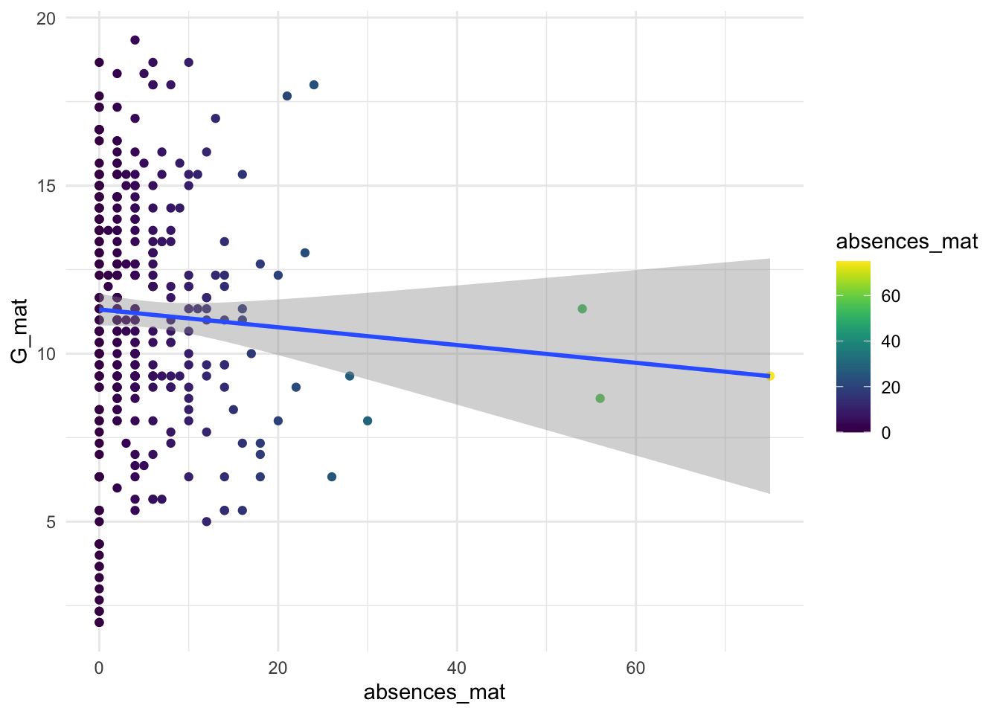
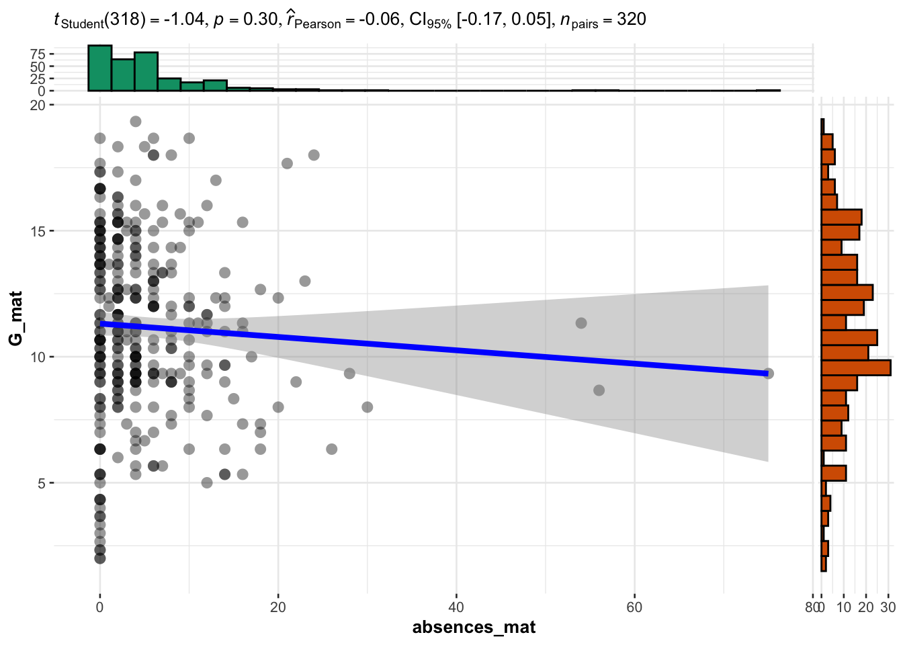
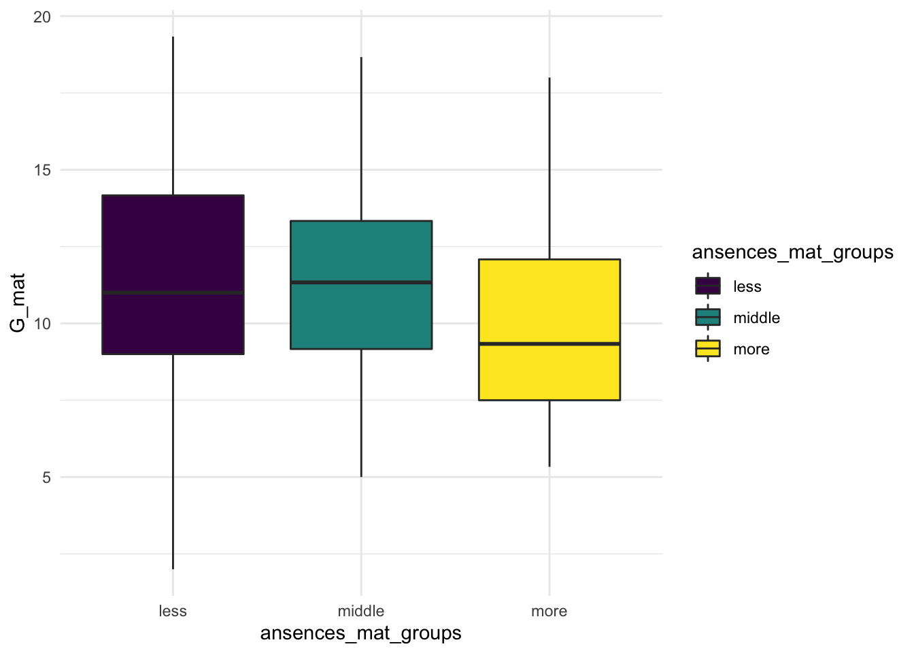
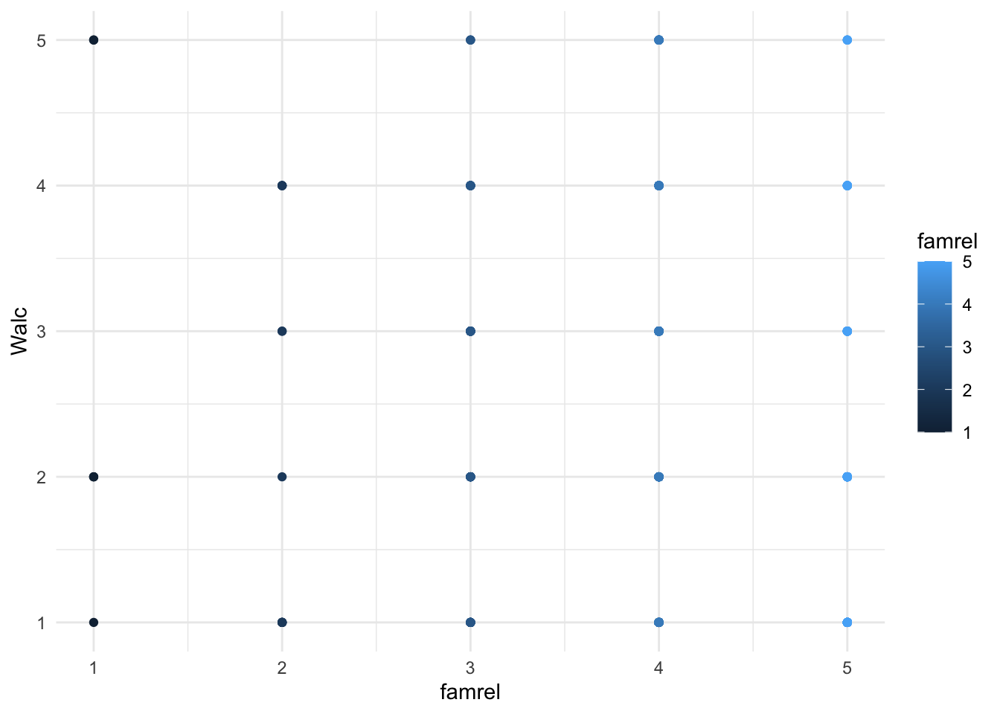
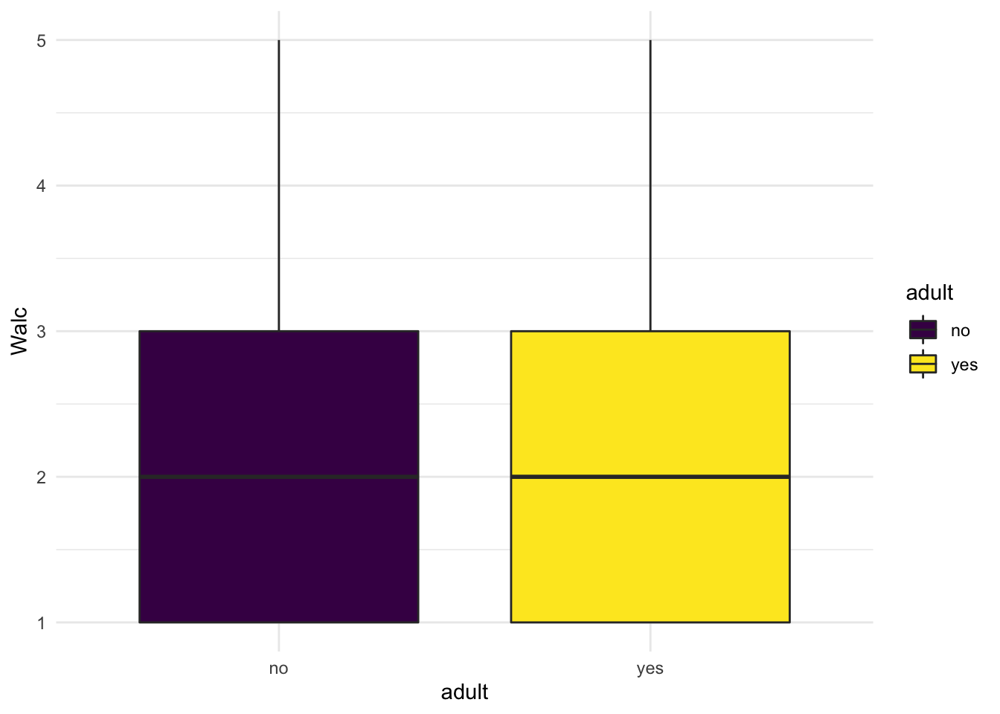
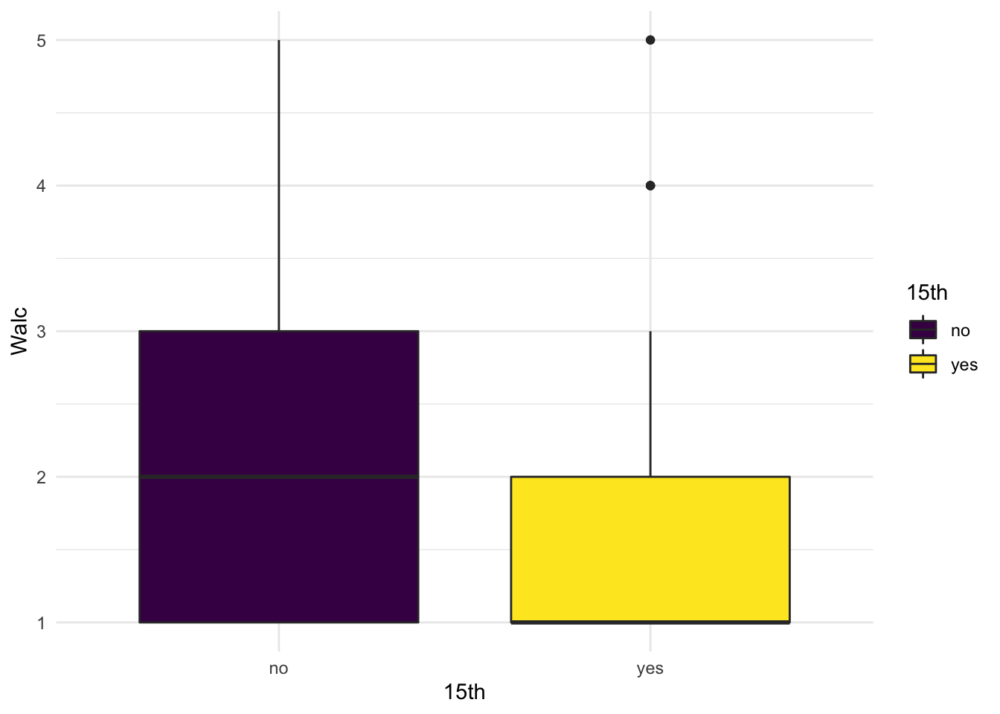
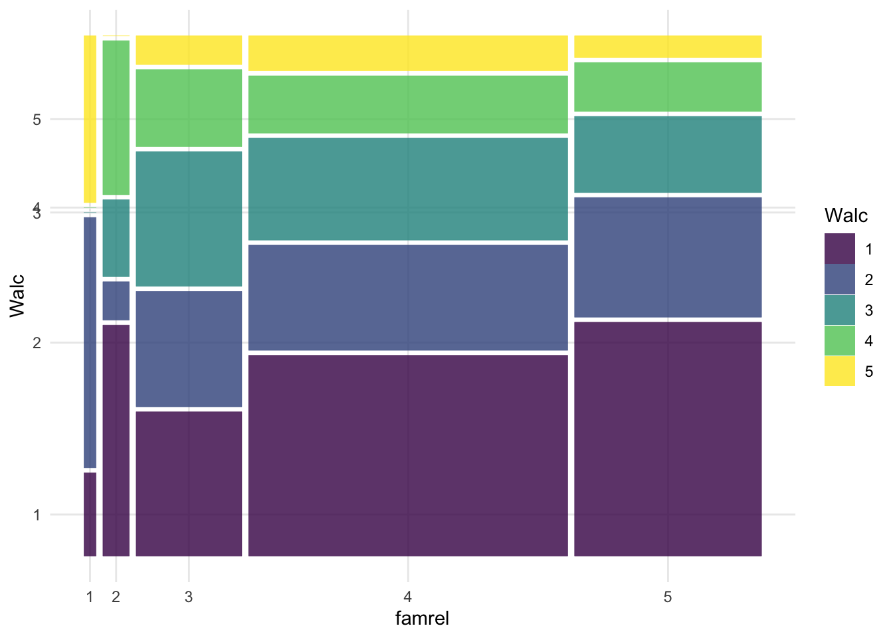
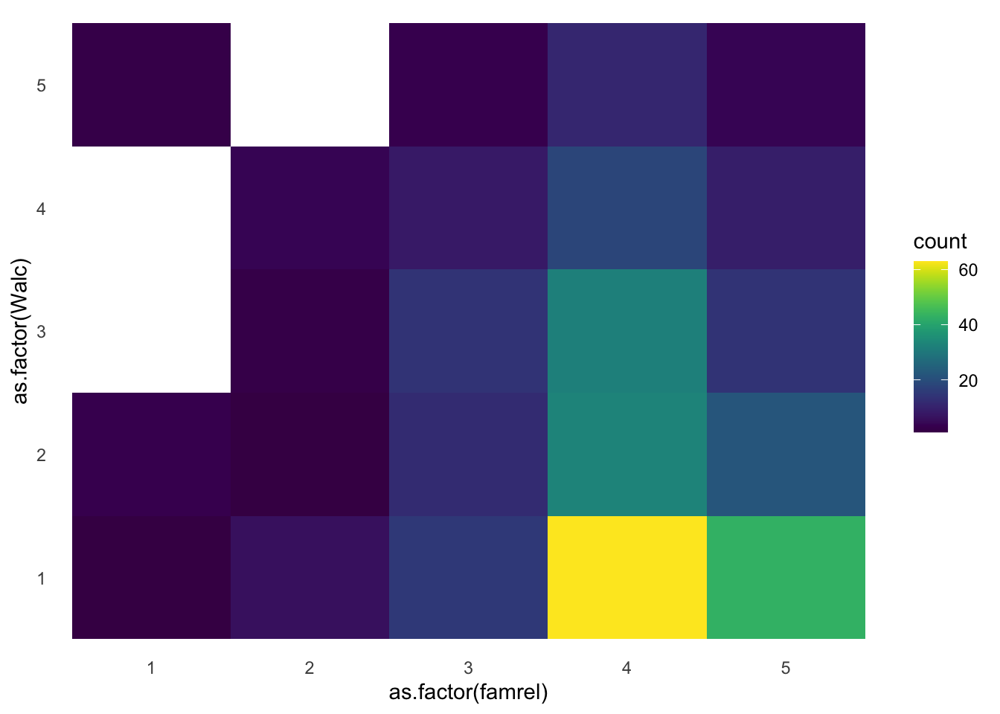
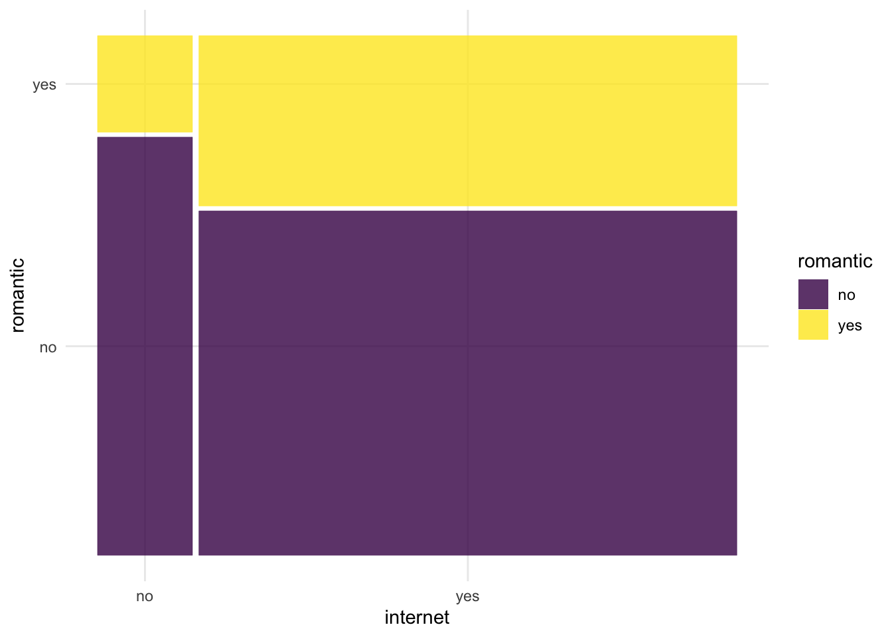

12 Статистики вывода: расчет разных статистических методов для проверки гипотез
Начнем проверять с третьей гипотезы, чтобы идти от простого статистического метода к более сложным.
12.1 Проверка гипотезы 3_a: корреляционный тест и линейная регрессия
Первый вариант гипотезы 3 – о наличии линейной связи, проверяется корреляционным тестом и обычной линейной регрессией.
Гипотеза 3_a
Чем больше пропусков занятий, тем более низкий средний балл по предмету
Проверяем корреляцию НП и ЗП:
##
## Pearson's product-moment correlation
##
## data: G_mat and absences_mat
## t = -1.0401, df = 318, p-value = 0.2991
## alternative hypothesis: true correlation is not equal to 0
## 95 percent confidence interval:
## -0.1668011 0.0517444
## sample estimates:
## cor
## -0.05822595# cor.test(students$G_mat, students$absences_mat, method = 'pearson') эта запись эквивалентна предыдущей##
## Pearson's product-moment correlation
##
## data: G_por and absences_por
## t = -1.7923, df = 318, p-value = 0.07404
## alternative hypothesis: true correlation is not equal to 0
## 95 percent confidence interval:
## -0.207367985 0.009745291
## sample estimates:
## cor
## -0.1000016##
## Call:
## lm(formula = students$G_mat ~ students$absences_mat)
##
## Residuals:
## Min 1Q Median 3Q Max
## -9.3130 -2.1013 0.0045 2.4727 8.1262
##
## Coefficients:
## Estimate Std. Error t value Pr(>|t|)
## (Intercept) 11.31298 0.24196 46.76 <2e-16 ***
## students$absences_mat -0.02645 0.02544 -1.04 0.299
## ---
## Signif. codes: 0 '***' 0.001 '**' 0.01 '*' 0.05 '.' 0.1 ' ' 1
##
## Residual standard error: 3.559 on 318 degrees of freedom
## Multiple R-squared: 0.00339, Adjusted R-squared: 0.0002563
## F-statistic: 1.082 on 1 and 318 DF, p-value: 0.299112.2 Визуализации гипотезы 3_a: корреляционный тест и линейная регрессия
Сначала я включу пакет viridis, чтобы поменять дефолтные цвета на более красивые. Там, где я буду его использовать, я буду добавлять к графику scale_color_viridis() (для точек и контуров) или scale_fill_viridis() (для заливки объектов). Подробнее https://cran.r-project.org/web/packages/viridis/vignettes/intro-to-viridis.html
students %>%
ggplot(aes(x=absences_mat, y = G_mat)) +
geom_point(aes(colour = absences_mat)) +
geom_smooth(method="lm") +
scale_color_viridis() +
theme_minimal()## `geom_smooth()` using formula 'y ~ x'
Другой варивант этого же графика с помощью пакета ggstatsplot и функции из него ggscatterstats
## You can cite this package as:
## Patil, I. (2021). Visualizations with statistical details: The 'ggstatsplot' approach.
## Journal of Open Source Software, 6(61), 3167, doi:10.21105/joss.03167## Registered S3 method overwritten by 'ggside':
## method from
## +.gg ggplot2## `stat_bin()` using `bins = 30`. Pick better value with `binwidth`.
## `stat_bin()` using `bins = 30`. Pick better value with `binwidth`.
12.3 Проверка гипотезы 3_b: ANOVA
Гипотеза 3_b
Студенты, у кого было от 0 до 5 пропусков, от 6 до 15 и больше 15 будут иметь разный средний балл по предмету
Эта гипотеза предполагает сравнение трех групп, тестируем ANOVA.
Сначала создадим новые переменные, чтобы перекодировать пропуски в группы:
students %>%
mutate(ansences_mat_groups = ifelse(absences_mat <=5, "less", ifelse(absences_mat <=15, "middle", "more"))) %>%
mutate(ansences_por_groups = ifelse(absences_por <=5, "less", ifelse(absences_por <=15, "middle", "more"))) -> students
kable(students[1:10,]) %>% scroll_box(width = "100%")| student | school | sex | age | address | famsize | Pstatus | Medu | Fedu | Mjob | Fjob | reason | guardian | traveltime | studytime | failures | schoolsup | famsup | paid_mat | activities | nursery | higher | internet | romantic | famrel | freetime | goout | Dalc | Walc | health | absences_mat | G1_mat | G2_mat | G3_mat | paid_por | absences_por | G1_por | G2_por | G3_por | G_mat | G_por | ansences_mat_groups | ansences_por_groups |
|---|---|---|---|---|---|---|---|---|---|---|---|---|---|---|---|---|---|---|---|---|---|---|---|---|---|---|---|---|---|---|---|---|---|---|---|---|---|---|---|---|---|---|
| id1 | GP | F | 18 | U | GT3 | A | 4 | 4 | at_home | teacher | course | mother | 2 | 2 | 0 | yes | no | no | no | yes | yes | no | no | 4 | 3 | 4 | 1 | 1 | 3 | 6 | 5 | 6 | 6 | no | 4 | 0 | 11 | 11 | 5.666667 | 7.333333 | middle | less |
| id2 | GP | F | 17 | U | GT3 | T | 1 | 1 | at_home | other | course | father | 1 | 2 | 0 | no | yes | no | no | no | yes | yes | no | 5 | 3 | 3 | 1 | 1 | 3 | 4 | 5 | 5 | 6 | no | 2 | 9 | 11 | 11 | 5.333333 | 10.333333 | less | less |
| id4 | GP | F | 15 | U | GT3 | T | 4 | 2 | health | services | home | mother | 1 | 3 | 0 | no | yes | yes | yes | yes | yes | yes | yes | 3 | 2 | 2 | 1 | 1 | 5 | 2 | 15 | 14 | 15 | no | 0 | 14 | 14 | 14 | 14.666667 | 14.000000 | less | less |
| id5 | GP | F | 16 | U | GT3 | T | 3 | 3 | other | other | home | father | 1 | 2 | 0 | no | yes | yes | no | yes | yes | no | no | 4 | 3 | 2 | 1 | 2 | 5 | 4 | 6 | 10 | 10 | no | 0 | 11 | 13 | 13 | 8.666667 | 12.333333 | less | less |
| id6 | GP | M | 16 | U | LE3 | T | 4 | 3 | services | other | reputation | mother | 1 | 2 | 0 | no | yes | yes | yes | yes | yes | yes | no | 5 | 4 | 2 | 1 | 2 | 5 | 10 | 15 | 15 | 15 | no | 6 | 12 | 12 | 13 | 15.000000 | 12.333333 | middle | middle |
| id7 | GP | M | 16 | U | LE3 | T | 2 | 2 | other | other | home | mother | 1 | 2 | 0 | no | no | no | no | yes | yes | yes | no | 4 | 4 | 4 | 1 | 1 | 3 | 0 | 12 | 12 | 11 | no | 0 | 13 | 12 | 13 | 11.666667 | 12.666667 | less | less |
| id8 | GP | F | 17 | U | GT3 | A | 4 | 4 | other | teacher | home | mother | 2 | 2 | 0 | yes | yes | no | no | yes | yes | no | no | 4 | 1 | 4 | 1 | 1 | 1 | 6 | 6 | 5 | 6 | no | 2 | 10 | 13 | 13 | 5.666667 | 12.000000 | middle | less |
| id9 | GP | M | 15 | U | LE3 | A | 3 | 2 | services | other | home | mother | 1 | 2 | 0 | no | yes | yes | no | yes | yes | yes | no | 4 | 2 | 2 | 1 | 1 | 1 | 0 | 16 | 18 | 19 | no | 0 | 15 | 16 | 17 | 17.666667 | 16.000000 | less | less |
| id10 | GP | M | 15 | U | GT3 | T | 3 | 4 | other | other | home | mother | 1 | 2 | 0 | no | yes | yes | yes | yes | yes | yes | no | 5 | 5 | 1 | 1 | 1 | 5 | 0 | 14 | 15 | 15 | no | 0 | 12 | 12 | 13 | 14.666667 | 12.333333 | less | less |
| id11 | GP | F | 15 | U | GT3 | T | 4 | 4 | teacher | health | reputation | mother | 1 | 2 | 0 | no | yes | yes | no | yes | yes | yes | no | 3 | 3 | 3 | 1 | 2 | 2 | 0 | 10 | 8 | 9 | no | 2 | 14 | 14 | 14 | 9.000000 | 14.000000 | less | less |
Применим тест
Классическое выполнение ANOVA в R:
## Df Sum Sq Mean Sq F value Pr(>F)
## ansences_mat_groups 2 22 10.87 0.857 0.425
## Residuals 317 4021 12.68## Df Sum Sq Mean Sq F value Pr(>F)
## ansences_por_groups 2 14.5 7.236 1.154 0.317
## Residuals 317 1987.6 6.270ANOVA в R c помощью более тонко и понятно настраеваемой функции ezANOVA из пакета ez:
library("ez")
model_abs_mat_ez = ezANOVA(data = students, dv = G_mat, wid = student,
between = ansences_mat_groups)
model_abs_mat_ez## $ANOVA
## Effect DFn DFd F p p<.05 ges
## 1 ansences_mat_groups 2 317 0.8568567 0.4254751 0.005376968
##
## $`Levene's Test for Homogeneity of Variance`
## DFn DFd SSn SSd F p p<.05
## 1 2 317 11.28622 1450.235 1.233501 0.292665312.4 Визуализации гипотезы 3_b: ANOVA
Уже знакомые нам боксплоты: “ящики с усами”, горизонтальная линия посредеине обозначает медиану в данных, границы коробочек – начало первого и конец третьего квартиля данных (если построить описательный график плотности вероятности или гистограмму для данной зависимой переменной)
students %>%
ggplot(aes(x=ansences_mat_groups, y = G_mat)) +
geom_boxplot(aes(fill = ansences_mat_groups)) +
scale_fill_viridis(discrete=TRUE) +
theme_minimal() Другой вариант того же графика – вайолин плот.
students %>%
ggplot(aes(x=ansences_mat_groups, y = G_mat)) +
geom_violin(aes(fill = ansences_mat_groups)) +
geom_boxplot(aes(fill = ansences_mat_groups), width=.1) +
scale_fill_viridis(discrete=TRUE) +
theme_minimal()
12.5 Проверка гипотезы 1: тест Манна-Уитни
Наши гипотезы трансформировались в:
Гипотеза 1_a:
студенты возраста 15, 16, 17 лет будут выбирать меньшие значения переменной Walc, чем студенты 18 лет и старше
Гипотеза 1_b:
студенты возраста 15 лет будут выбирать меньшие значения переменной Walc, чем студенты 16 лет и старше
Чтобы их проверить, перекодируем переменную age в новые переменные:
students %>%
mutate(adult = ifelse(age >= 18, "yes", "no")) %>%
mutate(`15th` = ifelse(age == 15, "yes", "no")) -> students #создали переменную, которая делит студентов на совершеннолетних и нет
kable(students[1:10,]) %>% scroll_box(width = "100%")| student | school | sex | age | address | famsize | Pstatus | Medu | Fedu | Mjob | Fjob | reason | guardian | traveltime | studytime | failures | schoolsup | famsup | paid_mat | activities | nursery | higher | internet | romantic | famrel | freetime | goout | Dalc | Walc | health | absences_mat | G1_mat | G2_mat | G3_mat | paid_por | absences_por | G1_por | G2_por | G3_por | G_mat | G_por | ansences_mat_groups | ansences_por_groups | adult | 15th |
|---|---|---|---|---|---|---|---|---|---|---|---|---|---|---|---|---|---|---|---|---|---|---|---|---|---|---|---|---|---|---|---|---|---|---|---|---|---|---|---|---|---|---|---|---|
| id1 | GP | F | 18 | U | GT3 | A | 4 | 4 | at_home | teacher | course | mother | 2 | 2 | 0 | yes | no | no | no | yes | yes | no | no | 4 | 3 | 4 | 1 | 1 | 3 | 6 | 5 | 6 | 6 | no | 4 | 0 | 11 | 11 | 5.666667 | 7.333333 | middle | less | yes | no |
| id2 | GP | F | 17 | U | GT3 | T | 1 | 1 | at_home | other | course | father | 1 | 2 | 0 | no | yes | no | no | no | yes | yes | no | 5 | 3 | 3 | 1 | 1 | 3 | 4 | 5 | 5 | 6 | no | 2 | 9 | 11 | 11 | 5.333333 | 10.333333 | less | less | no | no |
| id4 | GP | F | 15 | U | GT3 | T | 4 | 2 | health | services | home | mother | 1 | 3 | 0 | no | yes | yes | yes | yes | yes | yes | yes | 3 | 2 | 2 | 1 | 1 | 5 | 2 | 15 | 14 | 15 | no | 0 | 14 | 14 | 14 | 14.666667 | 14.000000 | less | less | no | yes |
| id5 | GP | F | 16 | U | GT3 | T | 3 | 3 | other | other | home | father | 1 | 2 | 0 | no | yes | yes | no | yes | yes | no | no | 4 | 3 | 2 | 1 | 2 | 5 | 4 | 6 | 10 | 10 | no | 0 | 11 | 13 | 13 | 8.666667 | 12.333333 | less | less | no | no |
| id6 | GP | M | 16 | U | LE3 | T | 4 | 3 | services | other | reputation | mother | 1 | 2 | 0 | no | yes | yes | yes | yes | yes | yes | no | 5 | 4 | 2 | 1 | 2 | 5 | 10 | 15 | 15 | 15 | no | 6 | 12 | 12 | 13 | 15.000000 | 12.333333 | middle | middle | no | no |
| id7 | GP | M | 16 | U | LE3 | T | 2 | 2 | other | other | home | mother | 1 | 2 | 0 | no | no | no | no | yes | yes | yes | no | 4 | 4 | 4 | 1 | 1 | 3 | 0 | 12 | 12 | 11 | no | 0 | 13 | 12 | 13 | 11.666667 | 12.666667 | less | less | no | no |
| id8 | GP | F | 17 | U | GT3 | A | 4 | 4 | other | teacher | home | mother | 2 | 2 | 0 | yes | yes | no | no | yes | yes | no | no | 4 | 1 | 4 | 1 | 1 | 1 | 6 | 6 | 5 | 6 | no | 2 | 10 | 13 | 13 | 5.666667 | 12.000000 | middle | less | no | no |
| id9 | GP | M | 15 | U | LE3 | A | 3 | 2 | services | other | home | mother | 1 | 2 | 0 | no | yes | yes | no | yes | yes | yes | no | 4 | 2 | 2 | 1 | 1 | 1 | 0 | 16 | 18 | 19 | no | 0 | 15 | 16 | 17 | 17.666667 | 16.000000 | less | less | no | yes |
| id10 | GP | M | 15 | U | GT3 | T | 3 | 4 | other | other | home | mother | 1 | 2 | 0 | no | yes | yes | yes | yes | yes | yes | no | 5 | 5 | 1 | 1 | 1 | 5 | 0 | 14 | 15 | 15 | no | 0 | 12 | 12 | 13 | 14.666667 | 12.333333 | less | less | no | yes |
| id11 | GP | F | 15 | U | GT3 | T | 4 | 4 | teacher | health | reputation | mother | 1 | 2 | 0 | no | yes | yes | no | yes | yes | yes | no | 3 | 3 | 3 | 1 | 2 | 2 | 0 | 10 | 8 | 9 | no | 2 | 14 | 14 | 14 | 9.000000 | 14.000000 | less | less | no | yes |
Итак, пойдем по алгоритму.
В тесте Гипотезы 1_a ЗП – порядковая, ЗП может принимать 5 значений – значит, я рассматриваю ее как количественную. Далее, одна НП, и наша гипотеза – о сравнении двух групп между собой. Эти группы независимы (тестируются оценки разных студентов, никак не связанных друг с другом). Значит, будем использовать тест Манна-Уитни (Mann-Whitney test)
##
## Wilcoxon rank sum test with continuity correction
##
## data: students$Walc by students$adult
## W = 8539.5, p-value = 0.676
## alternative hypothesis: true location shift is greater than 0В тесте Гипотезы 1_b ЗП – порядковая, ЗП может принимать 5 значений – значит, я рассматриваю ее как количественную. Далее, одна НП, и наша гипотеза – о сравнении двух групп между собой. Эти группы независимы (тестируются оценки разных студентов, никак не связанных друг с другом). Значит, будем использовать тест Манна-Уитни (Mann-Whitney test)
##
## Wilcoxon rank sum test with continuity correction
##
## data: students$Walc by students$`15th`
## W = 11326, p-value = 7.892e-05
## alternative hypothesis: true location shift is greater than 0Чем отличаются результаты тестов?
12.6 Визуализации гипотезы 1: тест Манна-Уитни
students %>%
ggplot(aes(x=adult, y = Walc)) +
geom_boxplot(aes(fill = adult)) +
scale_fill_viridis(discrete=TRUE) +
theme_minimal()
students %>%
ggplot(aes(x=`15th`, y = Walc)) +
geom_boxplot(aes(fill = `15th`)) +
scale_fill_viridis(discrete=TRUE) +
theme_minimal()
12.7 Проверка гипотезы 2: корреляционный тест
Проведем тест для следующей гипотезы.
Гипотеза 2
Чем ниже студенты оценивают качество семейных отношений famrel, тем выше они отмечают частоту употребления алкоголя Walc
Пойдем также по алгоритму.
ЗП – порядковая, ЗП может принимать 5 значений – значит, я рассматриваю ее как количественную. Одна независимая переменная, так же порядковая, то есть точно непараметрическая. Наша гипотеза не о сравнении групп, об ассоциативной (корреляционной) связи. Значит, следует использовать либо ранговую корреляцию Спирмена, либо порядковую логистическую регрессию (если я хочу, чтобы связь имела предсказательную силу).
Начнем с простого – корреляции Спирмена
## Warning in cor.test.default(students$famrel, students$Walc, method =
## "spearman"): Cannot compute exact p-value with ties##
## Spearman's rank correlation rho
##
## data: students$famrel and students$Walc
## S = 6173557, p-value = 0.0196
## alternative hypothesis: true rho is not equal to 0
## sample estimates:
## rho
## -0.13042312.8 Визуализации гипотезы 2: корреляционный тест (методом Спирмена, для порядковых переменных)
Первый вариант – мозаичный плот: размер плитки отражает частоту совпадения таких значений двух переменных. Указываем НП как x=product(НП), и ЗП как fill = ЗП.
library(ggmosaic)
students %>%
ggplot(aes()) +
geom_mosaic(aes(x = product(famrel), fill = Walc)) +
scale_fill_viridis(discrete=TRUE) +
theme_minimal() 
Другой вариант – хитмеп, как в коррелограмме, где размеры фиксированные, а за частоту совпадений отвечает цвет.
students %>%
ggplot(aes(x = as.factor(famrel), y = as.factor(Walc))) +
geom_bin2d() +
scale_fill_viridis() +
theme_minimal() +
theme(panel.grid.major = element_blank(),
panel.grid.minor = element_blank())
12.9 Проверка гипотезы 2: порядковая логистическая регрессия
Попробуем порядковую логистическую регрессию
##
## Attaching package: 'MASS'## The following object is masked from 'package:dplyr':
##
## select## Call:
## polr(formula = as.factor(Walc) ~ as.factor(famrel), data = students,
## Hess = TRUE)
##
## Coefficients:
## Value Std. Error t value
## as.factor(famrel)2 -0.6749 0.9380 -0.7195
## as.factor(famrel)3 -0.3941 0.8104 -0.4863
## as.factor(famrel)4 -0.7474 0.7870 -0.9497
## as.factor(famrel)5 -1.0775 0.7971 -1.3518
##
## Intercepts:
## Value Std. Error t value
## 1|2 -1.1787 0.7757 -1.5196
## 2|3 -0.2620 0.7751 -0.3381
## 3|4 0.7370 0.7814 0.9432
## 4|5 1.9655 0.7975 2.4645
##
## Residual Deviance: 920.8895
## AIC: 936.8895И добавим p-value
ctable <- coef(summary(famrel_ordered_model))
p <- pnorm(abs(ctable[, "t value"]), lower.tail = FALSE) * 2
ctable <- cbind(ctable, "p value" = p)
ctable## Value Std. Error t value p value
## as.factor(famrel)2 -0.6749367 0.9380228 -0.7195313 0.47181365
## as.factor(famrel)3 -0.3940742 0.8103672 -0.4862908 0.62676098
## as.factor(famrel)4 -0.7474178 0.7870231 -0.9496770 0.34227639
## as.factor(famrel)5 -1.0774883 0.7970952 -1.3517685 0.17644937
## 1|2 -1.1787296 0.7756805 -1.5196070 0.12860978
## 2|3 -0.2620218 0.7750710 -0.3380616 0.73531675
## 3|4 0.7369875 0.7813711 0.9431979 0.34557970
## 4|5 1.9654590 0.7975037 2.4645141 0.0137199212.10 Пример для хи-квадрат
Хи-квадратом мы обычно проверяем коррялцию двух категориальных переменных между собой: порядковых, если у нас не шкала Лайерта или мало возможных значений, и метод корреляции Спирмена не подходит, или номинальных, где корреляцию Спирмена провести уже невозможно.
Например, давайте проверим гипотезу о том, что наличие или отсутствие интернета в квартире связано с наличием или отсутствием романтических отношений. Предположим, что португальские школьники, у кого дома есть интернет, реже вступают в романтические отношения, по сравнению с теми, у кого интернета нет. Для этого будем использовать метод хи-квадрат. НП – наличие или отсутствие интернета (переменная internet), ЗП – наличие или отсутствие романтических отношений (romantic).
Проведем тест:
##
## Pearson's Chi-squared test
##
## data: students$internet and students$romantic
## X-squared = 3.9258, df = 1, p-value = 0.04755Сравниваем полученное p-value с выбранным уровнем \(\alpha = 0.05\). p-value < α, значит, вероятность получить такую связь между переменными при условии, если на самом деле ее нет, меньше нашего допустимого уровня ложноположительных результатов, мы отвергаем нулевую гипотезу и делаем вывод о наличии корреляционной связи.
12.11 Визуализации для хи-квадрат
Хи-квадрат чаще всего визуализируют уже знакомым по корреляции Спирмена мозаичным графиком. Указываем НП как x=product(НП), и ЗП как fill = ЗП.
library(ggmosaic)
students %>%
ggplot(aes()) +
geom_mosaic(aes(x = product(internet), fill = romantic)) +
scale_fill_viridis(discrete=TRUE) +
theme_minimal() 
12.12 Пример для мультиномиальной логистической регрессии
Предположим, у нас есть предположение, что категорию пропусков занятий (“мало”, “средне”, “много”) можно предсказать по наличию дома интернета, работе матери и наличию или отсутствию романтических отношений (! это НЕ СОДЕРЖАТЕЛЬНАЯ ГИПОТЕЗА. Если юы мы задумали такое исследование, нам было бы сложно объяснить, почему мы вообще решили такое исследоваить. Этот тест здесь просто для примера мультином лог регрессии). Переменная ansences_mat_groups категориальная, принимает 3 возможных значения: “less”, “middle”, “more”, и мы будем строить для нее мультиноомиальную логистическую регрессию.
Строить модель будем с помощью пакета nnet фунции multinom.
Сначала нам нужно выбрать референсной значение – противоположное тому, которое мы хотим предсказать. Здесь у нас гипотеза связана с тем, что наличие интернета, романтических отношений и образования матери, связанное с отсутствие дома, может быть связано с большим количеством пропусков. Поэтому за референсное значение берем то, где меньше всего пропусков.
library(nnet)
students$ansences_mat_groups2 <- relevel(as.factor(students$ansences_mat_groups), ref = 3)
levels(students$ansences_mat_groups2)## [1] "more" "less" "middle"Строим саму модель:
model_ansences_mat_groups <- multinom(ansences_mat_groups ~ internet + Mjob + romantic, data = students)## # weights: 24 (14 variable)
## initial value 351.555932
## iter 10 value 256.138935
## iter 20 value 255.444149
## iter 20 value 255.444149
## iter 20 value 255.444149
## final value 255.444149
## converged## Call:
## multinom(formula = ansences_mat_groups ~ internet + Mjob + romantic,
## data = students)
##
## Coefficients:
## (Intercept) internetyes Mjobhealth Mjobother Mjobservices Mjobteacher
## middle -1.130146 -0.2101027 0.07617281 0.08843108 0.4446334 0.6689585
## more -3.832296 1.1576313 -0.66428760 0.11017326 0.9395912 0.1361420
## romanticyes
## middle 0.6781589
## more 0.7151319
##
## Std. Errors:
## (Intercept) internetyes Mjobhealth Mjobother Mjobservices Mjobteacher
## middle 0.4185274 0.3764586 0.568958 0.4241679 0.4616164 0.4780972
## more 1.1613018 1.0681404 1.274832 0.8440447 0.8403030 0.9690785
## romanticyes
## middle 0.2723936
## more 0.4720498
##
## Residual Deviance: 510.8883
## AIC: 538.8883Обратите внимание, что в аутпуте модели нет p-value – чтобы их получить, нужно выполнить дополнительнве действия:
z <- summary(model_ansences_mat_groups)$coefficients/summary(model_ansences_mat_groups)$standard.errors
p <- (1 - pnorm(abs(z), 0, 1)) * 2
p## (Intercept) internetyes Mjobhealth Mjobother Mjobservices Mjobteacher
## middle 0.0069278582 0.5767740 0.8934965 0.8348532 0.3354422 0.161750
## more 0.0009668487 0.2784615 0.6023121 0.8961470 0.2634997 0.888276
## romanticyes
## middle 0.01278765
## more 0.12978499Это наши p-value.
Понятнее всего результаты логистической модели визуализировать в виде кривых вероятностей в пользу одного или друого варианта ЗП. Эти вероятности мы получаем как коэффициенты модели:
## (Intercept) internetyes Mjobhealth Mjobother Mjobservices Mjobteacher
## middle 0.32298602 0.810501 1.079149 1.092459 1.559918 1.952203
## more 0.02165984 3.182386 0.514640 1.116471 2.558935 1.145845
## romanticyes
## middle 1.970247
## more 2.044456Более подробно можно изучить этот анадиз по ссылке https://bookdown.org/chua/ber642_advanced_regression/multinomial-logistic-regression.html, для визуализации результатов лучше всего подойдут кривые вероятностей, как здесь https://stats.oarc.ucla.edu/r/dae/multinomial-logistic-regression/